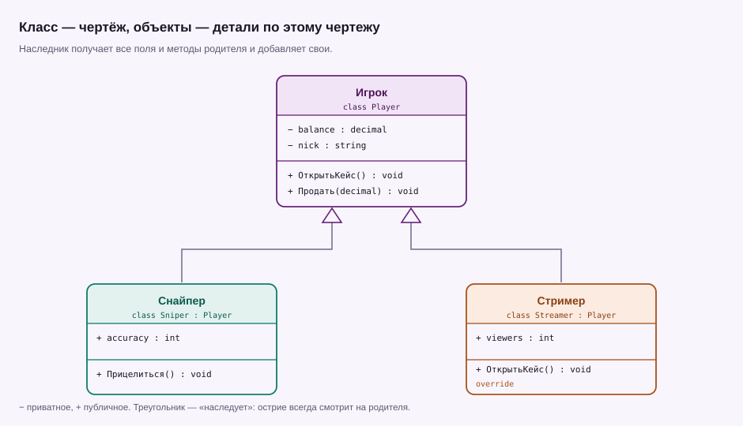

Урок 06 · 25 минут · ООП
Классы и ООП
Класс — это чертёж. Объект — деталь, сделанная по чертежу. Всё остальное в ООП строится на этой простой паре.
Класс и объект
До этого данные и код жили отдельно: переменные сами по себе, методы сами по себе. Класс связывает их: описывает, какие данные есть у сущности и что она умеет делать.
Player p = new Player();
p.Nick = "sneg";
p.Balance = 1000;
Console.WriteLine($"{p.Nick}: {p.Balance}₽"); // sneg: 1000₽
class Player
{
public string Nick;
public decimal Balance;
}new Player() создаёт объект по чертежу: у него свои собственные Nick и Balance. Второй объект — new Player() — никак не связан с первым.
Свойства: контроль вместо голого поля
Публичное поле можно испортить снаружи: написать p.Balance = -5000 и никто не остановит. Свойство даёт возможность проверить значение перед записью.
Player p = new Player { Nick = "sneg" };
p.Deposit(500);
Console.WriteLine(p.Balance); // 500
class Player
{
private decimal balance; // снаружи не видно
public string Nick { get; set; } = "";
public decimal Balance
{
get { return balance; }
private set { balance = value; }
}
public void Deposit(decimal amount)
{
if (amount <= 0)
{
return; // отрицательное пополнение отбиваем
}
Balance += amount;
}
}Здесь видно три уровня доступа: private — только внутри класса, public — отовсюду, private set — читать можно всем, менять только внутри. Это и есть инкапсуляция: класс сам решает, что пускать наружу.
Конструктор: объект рождается готовым
Конструктор — метод с именем класса и без возвращаемого типа. Он вызывается при new и задаёт начальное состояние.
Player a = new Player("sneg", 1000);
Player b = new Player("mark", 500);
Console.WriteLine(a.Balance); // 1000
class Player
{
public string Nick { get; }
public decimal Balance { get; private set; }
public Player(string nick, decimal startBalance)
{
Nick = nick;
Balance = startBalance;
}
public void Spend(decimal amount)
{
if (amount <= Balance)
{
Balance -= amount;
}
}
}Теперь невозможно создать игрока без имени и баланса — компилятор потребует оба аргумента. Это лучше, чем объект, у которого половина полей забыта.
Наследование

Player a = new Player { Nick = "sneg" };
Player b = new Streamer { Nick = "mark", Viewers = 120 };
Console.WriteLine(a.Greet()); // Я игрок sneg
Console.WriteLine(b.Greet()); // Я стример mark, 120 зрителей
class Player
{
public string Nick { get; set; } = "";
public virtual string Greet()
{
return $"Я игрок {Nick}";
}
}
class Streamer : Player
{
public int Viewers { get; set; }
public override string Greet()
{
return $"Я стример {Nick}, {Viewers} зрителей";
}
}Смотри, что произошло в последней строке: переменная объявлена как Player, а метод вызвался из Streamer. Это полиморфизм — программа выбирает реализацию по фактическому типу объекта, а не по типу переменной. Слово virtual разрешает переопределение, override его выполняет.
Зачем всё это, если можно жить с переменными
- Порядок. У игрока в одном месте и данные, и поведение. Не нужно искать по файлу, где меняется баланс.
- Защита. Некорректное состояние отсекается внутри класса, а не проверяется в двадцати местах снаружи.
- Расширение. Новый тип игрока добавляется наследником, а код, который работает с
Player, менять не нужно.
class Streamer : Player. Что получит Streamer?Опиши класс Case: название, цена и метод, который списывает деньги с баланса и возвращает случайный предмет из массива. Если денег не хватает — метод возвращает строку «Не хватает денег» и ничего не списывает.
Создай игрока с 1000₽ и открой три кейса по 100₽.
Показать решение
decimal balance = 1000;
Case cheap = new Case("Стартовый", 100);
for (int i = 1; i <= 3; i++)
{
string drop = cheap.Open(ref balance);
Console.WriteLine($"Открытие {i}: {drop} (баланс: {balance}₽)");
}
// класс — после кода
class Case
{
private static readonly Random rnd = new Random();
private readonly string[] items = { "Бизон", "Лабиринт", "Ночной ужас" };
public string Name { get; }
public decimal Price { get; }
public Case(string name, decimal price)
{
Name = name;
Price = price;
}
public string Open(ref decimal balance)
{
if (balance < Price)
{
return "Не хватает денег";
}
balance -= Price;
return items[rnd.Next(items.Length)];
}
}Ключ ref позволяет методу изменить баланс вызывающего кода — иначе он работал бы с копией значения. static readonly Random создаётся один раз на весь класс: если делать new Random() при каждом вызове, числа начнут повторяться.